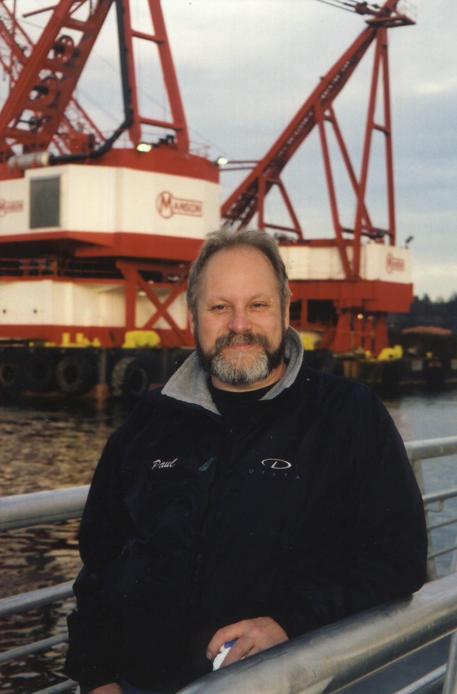
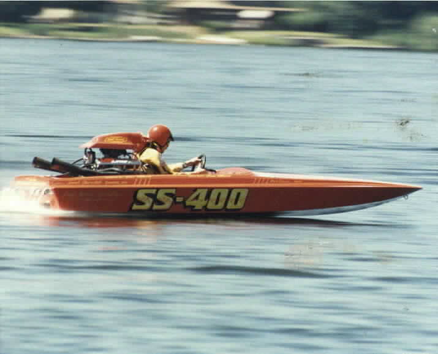
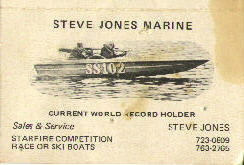
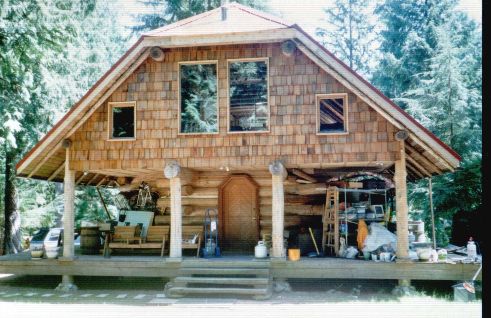
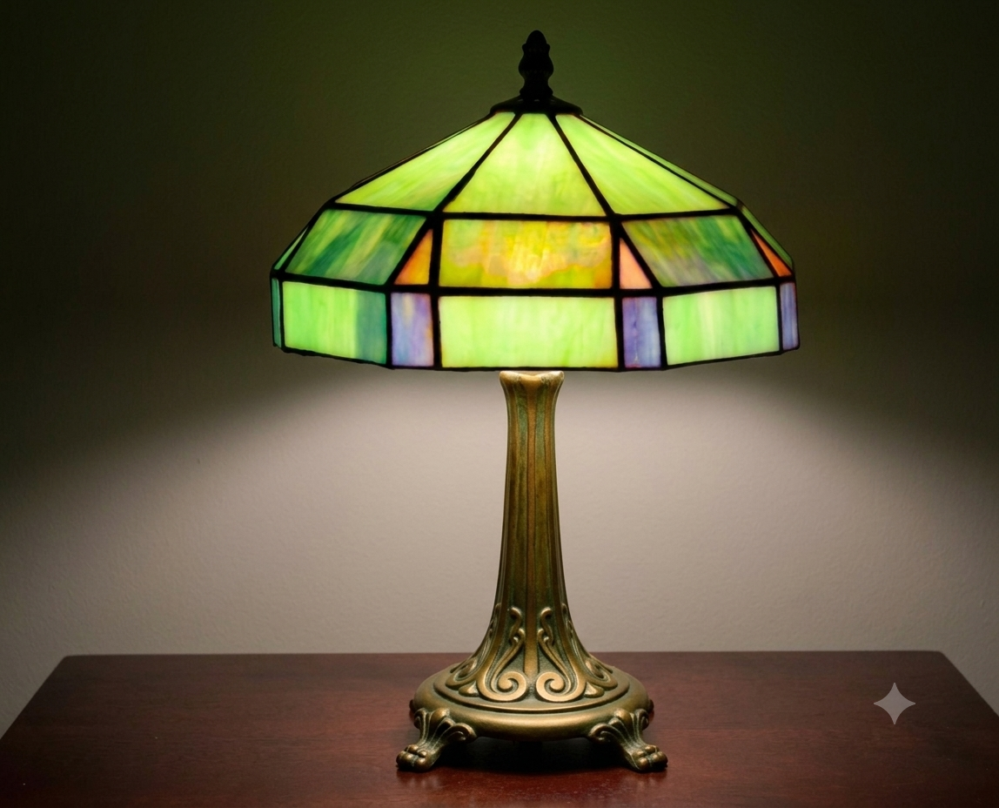

Paul Martin Casura was born in Seattle on April 21, 1950, and if you knew him, it will surprise you not at all to learn that he died there too, on June 10, 2026. Seattle was his world — or rather, Seattle’s waterways were — and he never needed to go far to find everything that mattered to him. He did whatever he wanted to, probably more so than anyone who ever knew him. This is the throughline. Keep it in mind.
He found his obsession early. Raised by a hardworking single mother, Barbara Jean, in Capitol Hill back when Capitol Hill was Capitol Hill, Paul was already making his way to Green Lake as a kid to watch speedboats race. When the action moved elsewhere in Washington state, he put himself on a bus and followed it. No one drove him. No one had to. In between, he found time to roll a bowling ball down the Counterbalance on Queen Anne Hill. It didn’t kill anyone. He was probably quite pleased with himself.
He went to Garfield High School, then Lincoln High School — two schools, he said, that were about as diametrically opposed as two schools could be. At Garfield, he learned to dress fly, made friends among early Black Panthers, and spent time listening to music together until both parties quietly concluded this might affect certain people’s street cred. When the family moved to a noticeably whiter neighborhood and he transferred to Lincoln, his sartorial choices did not transfer as smoothly. He may have edited the school paper. He definitely played football. But there was only one true obsession, and it had nothing to do with either.


From 1968 to 1970, Paul attended Seattle Community College’s boatbuilding program, where an honest teacher told him he’d learn more by apprenticing to a real mentor than sitting in any classroom. That led him to Steve Jones — veteran superstock racer, designer of the celebrated Starfire Racing Runabouts, and a man who recognized in Paul exactly what Paul recognized in the water: something worth devoting a life to. Jones built a class of racing runabouts specific to the Seattle area that were legendary in the sport, and Paul’s own SS-400 — originally nicknamed “The Excitable Boy,” in tribute to his beloved Warren Zevon — was one of them. Jones taught Paul the craft from the inside out, and Paul absorbed everything.

Steve Jones died on August 30, 1981, at Soap Lake in Grant County, Washington, thrown from his boat during a Seattle Inboard Racing Association race and struck by the propeller. He was 47. He left behind a wife, children, and a protégé who never forgot him. In one of the more extraordinary acts of devotion in the annals of the sport, Jones’s widow eventually gave Paul the Starfire — the actual boat that had killed Steve Jones. Paul rebuilt it. He was exceptionally proud of it. If you need that explained, you didn’t know Paul.


Paul worked on and off for years for Boeing, and ended up discontinuing that relationship when it interfered with his building a custom, octagonal log house out in Fall City. He referred to his employer thenceforth as the State of Washington, enjoying his time on unemployment. The land he bought bordered on Weyerhaeuser property, and he bought it from the delightful Gen MacManiman — the Pacific Northwest’s own Euell Gibbons, according to a Village Voice profile of the time, and a beloved figure in her own right.
On that land, Paul felled his own trees and built, by hand, an octagonal log home he called Rancho Deluxe. This being Paul, some of his more memorable injuries occurred during this era — including the time a felled log bounced off frozen ground and hit him. This was not his first rodeo with physical catastrophe, and it was not his last. There was the childhood hardball accident that fractured an eye socket and took his depth perception with it, a loss that apparently deterred him from nothing. There was the double-decker bus incident. And then there was the crane incident, in which the ball of a crane struck him in the head at approximately 40 miles per hour, almost knocking him off the top deck of the superyacht they were building at the time. He was best man at his sister Kate’s wedding the next day. The photos confirm he was present. His concussion did not allow him to confirm much else. Paul accumulated head injuries the way other people accumulate frequent flier miles.

Another spectacular injury came years earlier when he was retrofitting a double-decker bus — a project that attracted the unwelcome attention of a fire inspector who made a habit of dropping by the shop looking for violations. Paul, being Paul, was not particularly warm to him. Then came the day Paul fell off the top of the bus, landed flat on his back, and — in a detail that could only happen to Paul — bounced back up off the wallet in his back pocket, came back down, and knocked himself out cold hitting the deck a second time. When he came to and opened his eyes, the face staring down into his was, of course, the fire inspector’s. Who noted that Paul didn’t seem quite so cocky in his current condition. The universe has a sense of humor, and Paul was a frequent subject of its attention.
The log home project led Paul into the orbit of Skip Ellsworth — log home builder, founder of the Log Home Builder’s Association, and one of Bruce Lee’s earliest American students, a close friend of Lee’s for fourteen years. Paul became an instructor in Ellsworth’s program. This is the kind of biographical footnote that sounds made up. It isn’t.
For a few glorious years, Rancho Deluxe hosted annual pig roasts, attended by friends and family including his brother Scott. Paul had methodically studied the Seattle-area weather calendar to identify the weekend most likely to be dry, and held the roasts then. This is entirely consistent with a man who was, at his core, a born survivalist — barrel-chested, strong-legged, shorts-in-winter, utterly in his element when nature presented a challenge. On the rare occasion it snowed in Seattle and the power went out, Paul hauled out his gear with what can only be described as poorly concealed delight. He was born to prove himself in a man-versus-nature way, without any of the ideology that phrase sometimes implies.

1981 was Paul’s hardest year by some distance. He also lost his mother, Barbara Jean, that year. A relationship ended. The accumulated weight of it brought him to what he called, with characteristic directness, a nervous breakdown. And how did this maker get through it? He taught himself stained glass. When he was done building the lamp — muted watery pinks and greens on bronze, heavily leaded, beautiful — he was ready to rejoin the human race. The lamp outlasted a lot of things.

With the SS-400, Paul went on to hold an APBA world record in SuperStock racing for years — set at a lake somewhere in the Southeast, unbroken for decades before it was eventually surpassed. As owner and chief mechanic, not driver, the record was a testament to what he built and how he built it. Those who were there will remember. If you’re one of them, we’d love to hear from you.


Paul’s partnership with Dave Villwock — who would become the winningest driver in Unlimited hydroplane history — began in the SuperStock world and had consequences neither of them could have predicted. Villwock drove the SS-400 in the offseason from his Unlimited campaign, and the two made a formidable team. Their mutual friend and sponsor Jerry Yoder of Sunset Chevrolet was a constant presence and a genuinely beloved figure in Paul’s racing life — the kind of loyal, generous supporter who never asked for anything back, and whose faithfulness Paul never took for granted. Paul’s deep appreciation for Jerry and Sunset Chevrolet was a constant thread through his racing years.


When the Miss Circus Circus Unlimited team came calling and Villwock declined to get involved, he suggested Paul instead. Paul went. Then Paul called Villwock: “Aw, Dave, this is way bigger than anything we did. Can you come down and help me with this?” Villwock later said: “I could say no to them, but I couldn’t say no to Paul.” He went down. And that, according to Villwock himself in a 2025 interview with the APBA Historical Society, is how he got into Unlimited racing. Paul Casura was the reason Dave Villwock became what he became. Sit with that for a moment.
There is also this, from the same interview: Villwock recalled the time Paul noticed that Jerry Yoder — who was always doing things for everyone else — never had anyone do anything for him. So Paul fixed Yoder’s boat motor, then suggested they spend another day fixing the carpet, waxing and polishing it, just to do something for Jerry. “We got Jerry in tears,” Villwock said. “Nobody ever did anything for him.” That was Paul too.

Through Steve Jones, Paul had connections to Delta Marine Industries, the company Steve’s brothers Jack and Ivor Jones founded on Seattle’s Duwamish River in 1967. Delta started by transforming their hardy Alaskan fishing vessels at owners’ requests into yachts, then fiberglass superyachts — a business that grew into one of the most respected in the industry, operating out of one of only two deep-draft ports in the United States capable of handling vessels of that scale. Paul became Delta’s mechanical supervisor, the lead man on multiple superyachts [list pending], responsible for everything but the engine room. He was a mechanical genius, and the things he built with his hands stood the test of time. He never made a particular point of it.
Running always in parallel was Paul’s Marine Specialties, his Seattle shop, his first love made literal. SuperStock racing repairs, boat work, the smell of engines and water. His natural habitat. He was devoted enough to the Starfire legacy that his website, StarfireBoats.com — built and maintained by his then-wife — drew enough traffic to require an autoresponder clarifying that no, this had nothing to do with the ski boat company of a similar name, and yes, this was about Steve Jones’s Seattle-area Racing Runabouts specifically.
Away from the water and the workbench, Paul was a natural fisherman who spent formative time with family at Hood Canal and could put a student on a fish their first time out — a 16-inch sea-run cutthroat trout, as it happened, which pleased him enormously. He dubbed the successful pupil the Great White Fisherman, a title he defended publicly and without hesitation when unsolicited advice was offered at a virtual salmon fishing tank at the Seattle Center boat show. She landed the salmon. Of course she did.


He was a devoted Warren Zevon fan — hence “The Excitable Boy” — and caught live music whenever he could, including Leon Russell, Tina Turner, and Vonda Shepard. He was a committed General Hospital viewer during his Rancho Deluxe years, watching his stories between felling trees and working for what he cheerfully described as his employer at the time, the State of Washington. He once made himself so thoroughly sick combining beer and popcorn that he never did the two together again. A man of strong opinions, empirically derived. He was also, during his marriage, a devoted Qwubbie — the term of art for a husband who accompanies his quilting wife to quilt shows and shops in a supportive and helpful capacity — and was genuinely useful with difficult seams and geometries. Naturally.
Paul was utterly, constitutionally indifferent to what anyone else thought of him. He dressed fly when it fit and when it didn’t. He watched his soaps. He went to quilt shows. He rolled bowling balls down steep hills. He built what he wanted to build, fixed what needed fixing, and followed his obsession across decades without apology or explanation. It was, those who knew him agreed, quite refreshing.
Paul was predeceased by his parents, James Leroy Casura and Barbara Jean Casura (Wascher); his younger brother Scott; and his dear mentor Steve Jones. He is survived by his sister Kate Casura Hall; his cousin Nort Wascher and Nort’s children Mark and Michelle [and their children]; his ex-wife Lily Casura; and a wide community of boat-racing colleagues, friends, and mentees who learned from him and will not forget it. Special thanks are owed to Dave Villwock and Pam Villwock, Jerry Yoder and Sunset Chevrolet, whose longtime friendship meant more to Paul than he probably ever made a fuss about.


He was a Maker to his core — of boats, of homes, of lamps, of phrases that stuck, of people who knew more because they knew him. Those who recognized that in him found it returned in kind. There will not be another one like him.